3. Chapters 6-7, 2 Adv Func

This poster will cover:
- Understanting Rates of Change (Chapter 2 AF)
- Trigonometric Functions (Chapter 6 AF)
- Trigonometric Identities and Equations (Chapter 7 AF)
Understanting Rates of Change (Chapter 2 AF):
In this chapter, you learnt:
- Average Rate of Change (AROC)
- The average rate of change is a measure of the average of how much the function changed per unit over an interval.
AROC Equation:
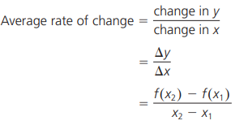
- Also, the slope of a secant over an interval on a graph is the same as the AROC of a function at this interval.
- Estimating Instantaneous Rate of Change (IROC)
- The instantaneous rate of change is the measure of how much the function changed per unit at a particular instant.
IROC Equation:
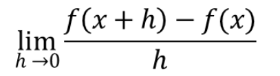
- This equation describes a change in y over a very small change in x (etc. h = 0.001).
- In Advanced Functions, it will only be teaching how to estimate the IROC (exact IROC needs Calculus 😔). To accurately estimate the instantaneous rate of change, the interval used to calculate the AROC should be as small as possible, but not 0 so that the equation doesn’t become undefined.
- Also, the slope of a tangent at a point on a graph is the same as the IROC of a function at this instant.
Trigonometric Functions (Chapter 6 AF):
In this chapter, you learnt:
- Radians
- Radians is a different method of measuring the size of an angle. Radians do not have a unit so it has the advantage of expressing the size of an angle as a real number.
Key conversions to know:
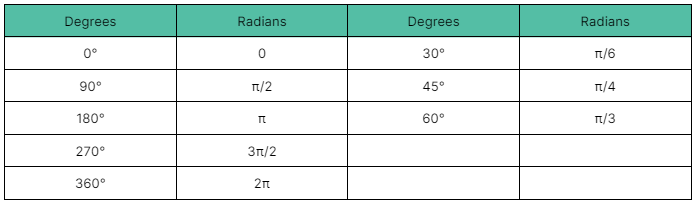
For reference, 1 radian is about 60°.
How to convert radians to degrees:
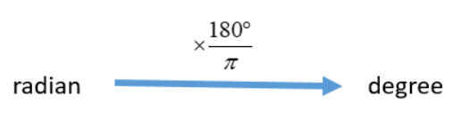
How to convert degrees to radians:
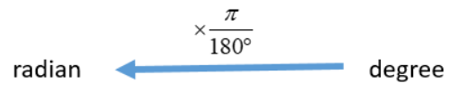
- Radians in Special Triangles/The Unit Circle
- Remember the special triangles shown in poster 2? Now the angles of these triangles can also be found using radians.
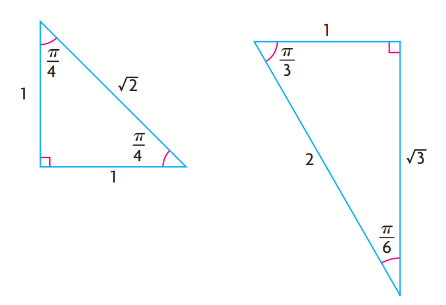
- On the left; 45-45-90 triangle
- On the right; 30-60-90 triangle
Also applies to the unit circle!
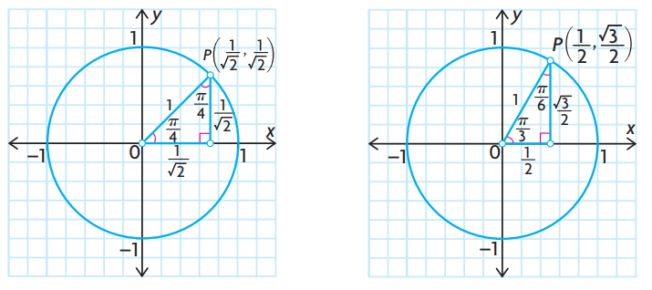
- Primary Trigonometric Function Properties
- Graph properties of y=sin
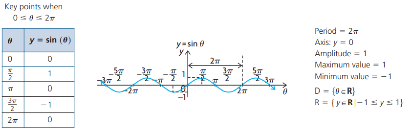
- Graph properties of y=cos
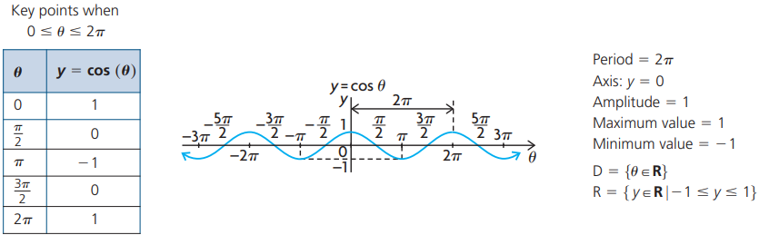
- Graph properties of y=tan
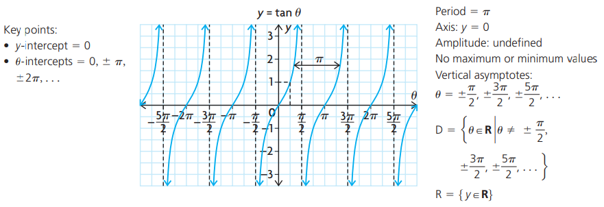
- Graphing Primary Trigonometric Functions
- There are 2 ways of sketching functions:
- 1. Start with 5 points from the parent function and apply the transformation formula to get the 5 required points to draw out the given function.
Transformational Formula:
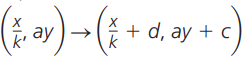
- 2. By looking at the given function, find the equation of the axis, amplitude and period of the function to find the max/min points and the points on the axis (for a total of 5 points).
Info on how to find these parameters:
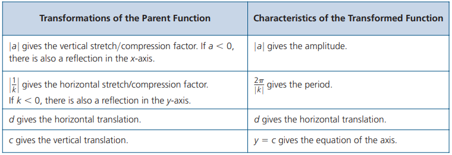
- Keep in mind that the x must be factored (no constant multiplying by the x) to find the individual values of k and c.
- i.e cos(2x+2π) → cos(2(x+π))
- Reciprocal Trigonometric Function Properties
Cosecant:
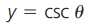
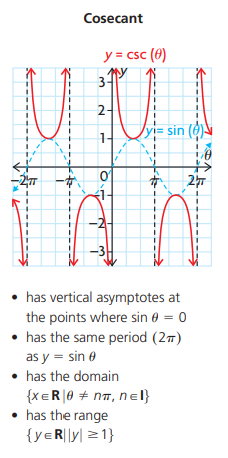
Secant:
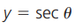
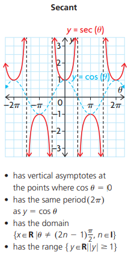
Cotangent:
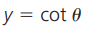
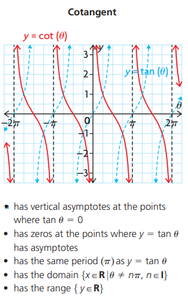
Trigonometric Identities and Equations (Chapter 7 AF):
In this chapter, you learnt:
- Equivalent Trigonometric Functions
Phase Shifts:
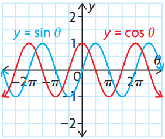
- Since sine and cosine graphs share the same shape and period, a phase shift will create 2 equivalent functions.
- By translating the cosine function to the right by π/2 (90°), it results in the exact same graph as the sine function.
- Alternatively, by translating the sine function to the left by π/2 (90°), it results in the exact same graph as the cosine function.
Mathematically, this is shown as:
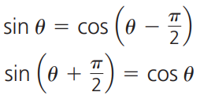
Reflection of Primary Trigonometric Functions:
- When cosine functions are reflected across the y-axis, it’s exactly the same graph:
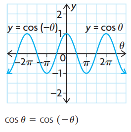
- When sine and tan functions are reflected across the x-axis, it’s exactly the same graph as if they were reflected across the y-axis:
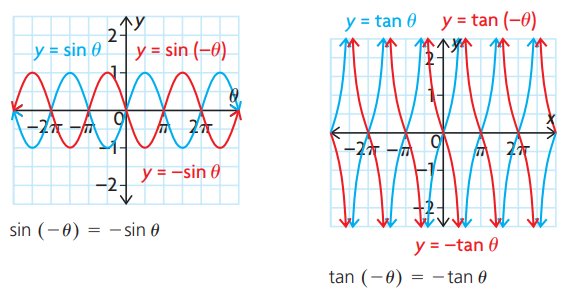
Angles:
- Additionally, you can find related trigonometric relationships between the complementary angles inside a right triangle.
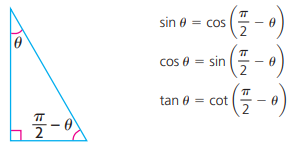
. . . and with comparing principal angles and their related acute angle:
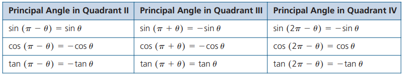
- Trigonometric Identities
- Advanced Functions introduces sum/difference identities and double angle identities (highlighted in yellow). To prove trigonometric identities, all of these shown below can be used.
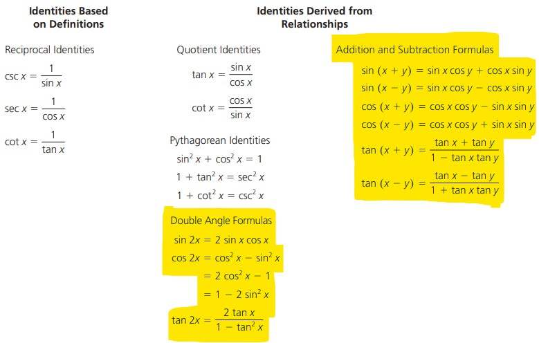